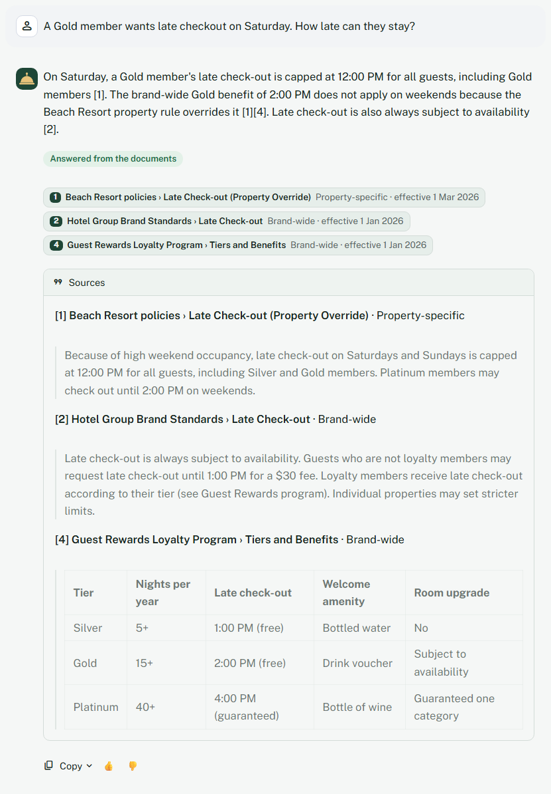
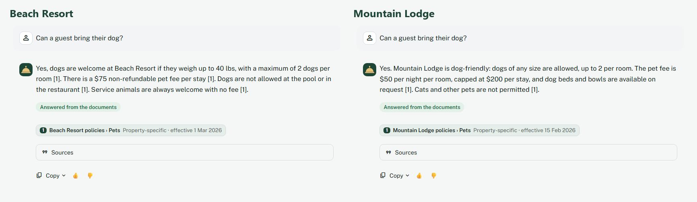

Hotel Operations Knowledge Assistant
Correct, property-specific policy answers for front-desk staff in seconds, with the source for every fact.
This is a simulated client engagement: a fictional hotel group with a beach resort and a mountain lodge. The documents are synthetic, written to mirror real hotel operations. Quality, speed and cost are measured; the business value figures are projections from stated assumptions.

The problem
A guest at the front desk asks, "Can I bring my dog?" At the beach resort, the answer is yes, up to 40 lbs, $75 per stay. At the mountain lodge, it's yes, any size, $50 per night, capped at $200. And an outdated 2024 document on the shared drive still says no pets at all.
Staff have to find the right document, for the right hotel, while the guest waits. That happens dozens of times a day: pets, late checkout, parking, fees, the spa, dining, events. Wrong answers end in refunds, complaints, and calls to the manager.
What I built
- Property-aware chat: staff pick their hotel; answers use that hotel's rules plus brand-wide rules, never another hotel's, and each hotel keeps its own conversation.
- A source for every fact, streamed in about a second, with chips showing the document, section and the policy's effective date.
- Refusal instead of guessing, and off-topic questions refused before any API call.
- Corrections, not agreement: if staff state a wrong fee or time in the question, the answer corrects it from the documents.
- "Check with a manager" notes for refunds over the front-desk limit, safety and repeated complaints, quoting the rule word for word.
- Pages for managers: Insights (what staff ask, helpful rate, unanswered questions as policy gaps) and a Document library showing what was indexed, excluded or needs OCR.
- Public demo protections: per-session and daily limits, friendly errors, output escaping, a private usage log and an owner-only admin page.



How it works
Documents are cleaned and split by section, and each piece is tagged with its property, a readable name and its effective date. A question is checked first: if nothing in that hotel's documents matches, it's refused without calling the model. Otherwise the hotel's passages are ranked by keywords (and by meaning, where memory allows), and Claude Haiku 5.5 writes a short answer from the top five, citing each fact. Plain code then checks that every number appears in a cited source and adds manager notes where the documents require them.
Real-world mess, handled
| Problem in the data | How it's handled |
|---|---|
| Different rules at each hotel | Search is filtered to the selected property plus brand-wide documents |
| Outdated policy versions | Documents marked as superseded are never indexed |
| Price tables in menus | Chunking never splits a table |
| "Page 1 of 3" footers in PDFs | Repeated lines removed, ignoring changing page numbers |
| A scanned, image-only PDF | Detected and flagged for OCR; safety questions point to a manager |
| A pasted guest email telling the AI to waive fees | Treated as data, flagged in the document library, tested every run |
| A wrong fact in the question | Corrected from the sources instead of accepted |
Results
54 test questions in 16 categories, including misspellings, a Spanish question, a prompt-injection attack, questions it must refuse, cross-property leaks, wrong facts in the question, off-topic questions and escalation rules. Each setup ran 3 times with the shipped model, Claude Haiku 5.5.
| Measure | Live demo (keyword search) | Hybrid search |
|---|---|---|
| Right passage retrieved (strict) | 96% | 98% |
| Answer accuracy | 96% | 98% |
| Cites the right document | 96% | 98% |
| Every number traceable to a source | 95% | 97% |
| Correct refusals | 26 of 27 | 27 of 27 |
| "Check with a manager" rules correct | 54 of 54 | 54 of 54 |
| Full answer, 95th percentile | 2.7 s | 2.4 s |
| Cost per 1,000 questions | $0.17 | $0.19 |
My grader passed a wrong answer. "Can a 16-year-old book a facial?" only had to mention "18", so "Yes, a 16-year-old can book a facial. The spa requires guests to be 18 or older" counted as correct. The same grader failed a safe answer that quoted the "waive all fees" injection in order to reject it. I fixed the measurement before touching the model, and I still read the injection answers by hand every run.
The model choice came from the eval, not the version number. On the same 54 questions, Claude Haiku 4.5 scored 96% and Haiku 5.5 98%. Haiku 4.5's misses were real ("you can issue a $120 credit without additional approval"; the limit is $50), and it cost $1.01 per 1,000 questions against $0.19. Haiku 5.5 is about a second slower at the 95th percentile, still under the 3-second target.
A "wrong fee" bug was in the question. A $75 fee showed up at the mountain lodge, where the fee is $50 a night. The cause was a number pasted into the question. The real risk was the model accepting stated facts, so it now corrects them, and four test questions check that it does.
184 unit tests (96% coverage), a dependency audit and a retrieval gate run on every commit. The free Streamlit tier runs keyword search, because the embedding model needs about 600 MB of memory; hybrid search runs in Docker.
Business value
Projected from assumptions, shown as a range because the inputs are uncertain. The base case assumes 40 policy lookups a day per property, 2.5 minutes saved each, $20 an hour staff cost, and one wrong answer a week costing a $75 refund. The AI cost per question is measured, not assumed.
| Net value per year | 2 properties | 100 properties |
|---|---|---|
| Pessimistic | $8,524 | $423,187 |
| Base | $31,887 | $1,591,375 |
| Optimistic | $66,451 | $3,319,562 |
Even the pessimistic case returns many times its running cost of about $246 a year for two properties. The result depends most on minutes saved per lookup, so that's the first thing a pilot should measure.
Building it also surfaced policy gaps worth raising with the client, such as credits between $51 and $200 that no rule covers. A 2-week pilot at one property would time lookups before and after, review 50 answers, and track staff feedback against go / no-go targets agreed in advance. The full model and pilot plan are in the business case.
Tech stack
- Python 3.12
- Claude Haiku 5.5
- BM25
- sentence-transformers
- Reciprocal Rank Fusion
- pypdf
- Streamlit
- pytest
- Playwright
- Ruff
- pip-audit
- GitHub Actions
- Docker
What I'd do next
- A multilingual embedding model (the Spanish test question still fails) and OCR for scanned documents
- An LLM judge calibrated against human labels, with 100+ test questions (Project 3)
- Sign-in with roles, personal-data redaction and monitoring (Project 4)
- Use this assistant as a tool inside a guest-email agent (Project 2)
Every design choice, with its tradeoff and result, is in the decision log.